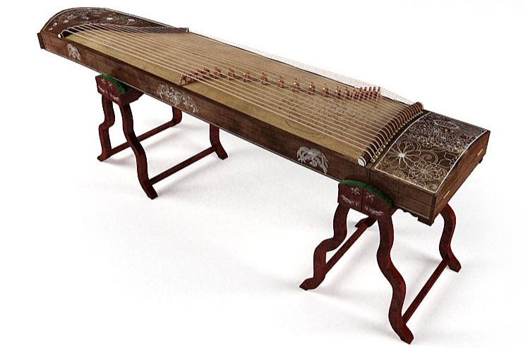
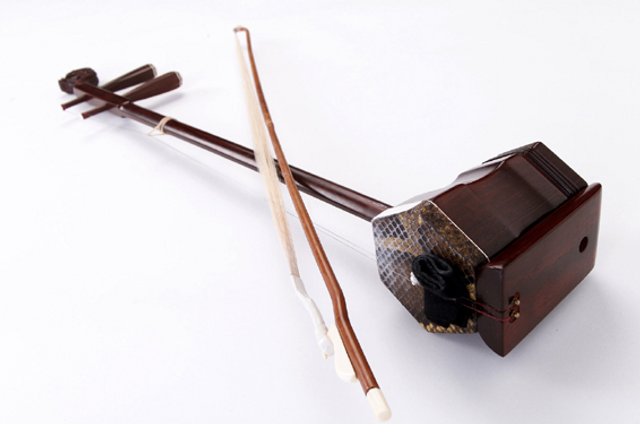
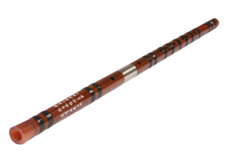
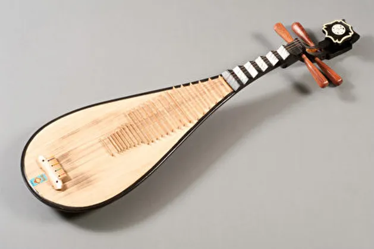

Musical Instruments
Guzheng',
'The Guzheng, also known as the Chinese zither, is a traditional Chinese musical instrument with a history that spans over 2,500 years. Its name, guzheng translates to ancient zheng in Mandarin. The instrument is recognized for its beautiful, melodic tones and is a significant component of traditional Chinese music.',
'playing-Guzheng.png',
'',
'There are 21–26 strings on the modern guzheng. The length of a traditional Chinse guzheng is 1.63 meters. It is usually played by a female musician sitting on a chair in front of the instrument. Players always wear fingerpicks made from plastic, resin, or other materials. Guzheng players often perform solo. Modern guzheng instruments are often played by pinching the strings to play heptatonic notes and chords. One of the classical melodies played on a guzheng is High Mountain and Running Water (高山流水).
Music played by Guzheng:', 'Guzheng.mp3')">
Music played by Guzheng:', 'Guzheng.mp3')">
Guzheng
Erhu',
'The Erhu is a traditional Chinese two-stringed bowed musical instrument. It is also known as the Chinese violin in the Western World. Erhu is often played in Chinese Opera performances and traditional orchestras. It allows for a high degree of virtuosity, covers three octaves, and can be made to imitate the sound of Chinese singing as well as birds and horses. It produces a melancholy sound.',
'',
'Erhu.mp4',
'The Erhu consists of a long, slender neck made of wood, typically red sandalwood or rosewood, attached to a small resonator covered with python or snake skin. The instrument has two strings, traditionally made of silk, but modern versions may use nylon or metal strings. The bow used to play the Erhu is traditionally made of bamboo, with horsehair or synthetic fibers stretched between the ends. The most famous piece of erhu music in China is Two Springs Reflect the Moon (二泉映月). The music was composed by a blind streetside folk musician called Ah Bing (阿炳). He composed the music to express the grief of his bitter life in the old society. Two Springs Reflect the Moon became an exquisite example of Chinese traditional instrument music.',
'')">
Erhu
Dizi',
'Dizi is a kind of Chinese transverse flute that is often played in Chinese folk music or opera. Dizis generally have six or more finger holes. One hole is covered with paper so that the flute has a peculiar buzzing sound that people like.',
'playing-Dizi.png',
'',
'Most of the Dizis are made up of bamboo. Some of them are made up of wood, plastic, stone, or even jade. As they are easy to make and carry, the dizi is very popular with Chinese students and folk music lovers. There are several kinds of dizi flutes, such as the qudi and bangda, which mainly vary in length. The longer ones like the changdi allow for deeper sounds.
Music played by Dizi:', 'Dizi.mp3')">
Music played by Dizi:', 'Dizi.mp3')">
Dizi
Pipa',
'The pipa is a traditional Chinese musical instrument with four strings for over two thousands years. The instrument has a pear-shaped wooden body with frets like those on a guitar.',
'playing-Pipa.png',
'',
'The Pipa has a pear-shaped wooden body, traditionally made from sandalwood or other hardwoods, with a rounded back and a flat front. It typically has four strings, although there are variations with more strings. The strings are stretched over a fretted fingerboard, which is located on the front of the instrument, and are plucked using picks attached to the fingers. Modern pipas have been re-engineered to fit better with Western-style music. Steel strings are now used, so musicians wear special finger plectra. Pipa musicians are mainly seen on stage or perhaps as entertainers at special parties or restaurants. Musicians use a combination of plucking, strumming, and fingering techniques to create a wide range of tones and melodies.
Melodies of Pipa:', 'Pipa.mp3')">
Melodies of Pipa:', 'Pipa.mp3')">
Pipa
Dance

Dragon Dance

Fan Dance

Lion Dance